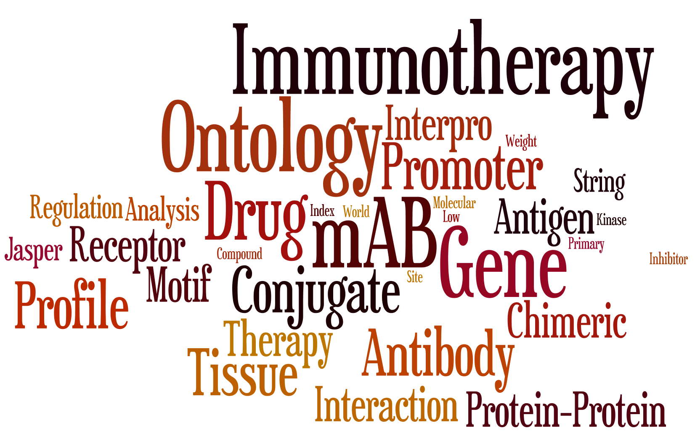

Concept
There are many known genetic lesions and oncogenic pathways that have no therapeutic avenues in cancer. This application is meant to provide a set of tools that can be used to identify & prioritize genes with oncogenic roles or correlation to oncogenic pathways that may serve as potential targets.
For more information about PITFIT »
Data
The data for PITFIT largely comes from the public arena. This application relies largely on data from the TCGA but in addition sources data from the CCLE, GTeX, and other large genomic data sets. Numerous public data sources such as Interpro, motifDB, world drug index etc... are sourced or accessed as well.
For a full list of data sources click here »
Tech Stack
The PITFIT application is served out via SHINY and all the base code for statistical analysis and data munging in performed with a mix of R and shell scripts. A number of Bioconductor packages are used such as motifdb, limma, and GAGE.
For a full list of package click here »
Target Prioritization Tool
This tool will help define the optimal therapy, by ranking the genes in a given gene list. In order to accomplish this, we will be examining a gene from various angles, including regulation, relevance to cancer, and cellular location. We will accomplish this by drawing on the ealther of public data sets and resources. This final output will be a score (for each therapeutic angle) that can help to rank prioritize targets for follow up.
